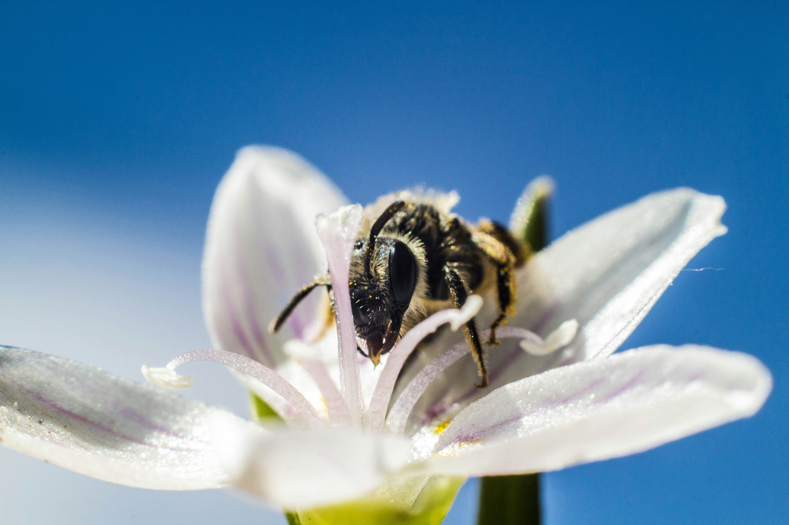

La polinización es el proceso mediante el cual el polen se transfiere entre flores, permitiendo la reproducción de las plantas.

Las abejas, mariposas y otros insectos son esenciales en este proceso, ya que transportan el polen de flor en flor.
También puede ocurrir por el viento o el agua, aunque los animales son los principales polinizadores.